Success definition
What does success for the entire system look like?
ReLeaf protects plants on demand by making the protectant where it is needed. No single component does that: biological, hardware and computational systems have to run as one continuous process.
So a successful ReLeaf system has to do more than show that each component works on its own. Stress has to be detected, the system has to respond, the engineered bacteria have to make the intended protectant, the bacteria have to stay contained, the protectant has to reach the plant, and the plant has to benefit.
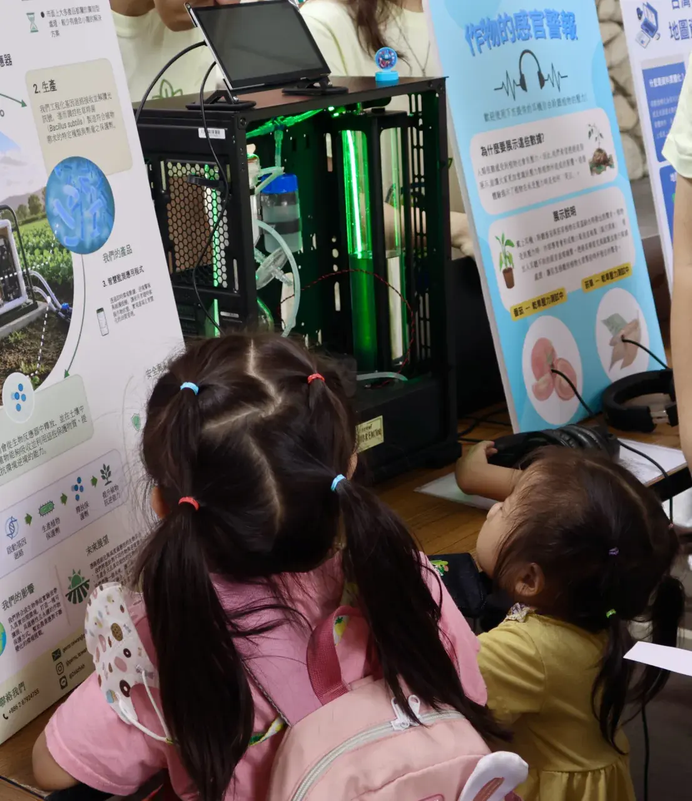
This led us to define ReLeaf’s success as a complete chain with 6 components:
- 1. DetectAIoT Sensor
- 2. ActivateGreen Light Signal
- 3. ProduceB. subtilis CcaSR
- 4. ContainHollow-Fiber Membrane
- 5. DeliverProtectant Secretion
- 6. ProtectPlant Protected
If one part of this chain fails, the success of the other components may not be enough to achieve the final goal. With so many interconnecting systems, how can we say with certainty that ReLeaf is successful?
What does ReLeaf need to accomplish?
At the system level, ReLeaf needs to accomplish six major functions:
- DetectIdentify when the plant is experiencing a relevant environmental stress.
- ActivateConvert the detected stress signal into the appropriate production response.
- ProduceProduce the intended plant protectant using the engineered bacterial system.
- ContainKeep the engineered bacteria contained within the bioreactor while allowing the protectant to leave.
- DeliverTransfer a sufficient amount of protectant from the bioreactor to the plant.
- ProtectProduce a measurable improvement in plant performance under stress.
System validation framework
To determine whether ReLeaf works as a complete system, we developed a system validation framework based on the six functional stages. For each stage, we asked:
- What does ReLeaf need to accomplish?
- What can be quantitatively measured?
- What level of performance should be considered successful?
- What evidence is needed to support the claim?
- How does this stage affect the rest of the system?

Success criteria
To say what counts as successful, we set a quantified metric for the components of all six stages. Each criterion is experimentally testable, so each one can be shown to be met or not.
- 1. Detect
Identify when the plant is experiencing stress.
StartBasic sensor setup (no quantitative threshold)
Success criteria- ≥90%detection accuracy
- ≤10%CV
- ≤60 sresponse time
AIoT Sensor System
- 2. Activate
Convert the detected stress signal into the appropriate light response
StartLED and tube holder, only few channels wired
Success criteria- ≥90%correct light activation
- ≤3 mindetection → activation
- 525/660 nmgreen/red light
DiOPAL + Light Control
- 3. Produce
Produce the intended type and amount of protectant using engineered B. subtilis
StartCircuit design (untested)
Success criteria- Western Blotconfirms target protectant production
- ELISAquantifies released protectant production
Genetic circuit
- 4. Contain
Keep engineered bacteria contained within the bioreactor
StartInitial reactor design (untested)
Success criteria- 0colony formation on shell-side
- lumen-sidesample confirms bacterial presence
Hollow-fiber membrane + bioreactor
- 5. Deliver
Transfer sufficient protectant from the bioreactor to the plants
StartSecretion into soil (untested)
Success criteria- minimumplant-effective concentration (varies)
- ±20%delivery stability
Membrane + delivery system
- 6. Protect
Produce measurable improvement in plant performance under stress
StartStress response observed (qualitative)
Success criteria- slight trendtoward improved plant growth with protectant treatment
- testedunder heat and salinity stress
Agar + hydroponics + soil
| Functional requirement | Metric | Acceptance criteria | Evidence |
|---|---|---|---|
| Sensors can identify target environmental stresses | Detection accuracy | Sensor correctly identifies the presence/absence of the target stress with ≥90% accuracy across predefined test conditions. | Stress sensor vs. known stress condition |
| Detect stress consistently, produce repeatable readings under the same conditions | Measure variation/CV | Repeated measurements under identical conditions have CV ≤10%. | Repeated sensor measurements |
| Detect stress within a useful timeframe | Detection response time | Stress detection occurs within a timeframe that still allows the downstream system to respond before the intended treatment window closes. Target: ≤60 sec. | Time-series sensor data |
| Distinguish stress severity, sensor output changes appropriately with increasing stress | Signal vs stress intensity | Sensor signal shows a monotonic and reproducible relationship with at least 3 predefined stress levels. | Sensor measurements across stress levels |
| Functional requirement | Metric | Acceptance criteria | Evidence |
|---|---|---|---|
| Convert stress information into the correct activation signal | Activation accuracy | The system activates under predefined stress conditions and remains inactive under predefined non-stress conditions. ≥90% correct activation decisions across test conditions. | sensor/controller integration test |
| Activate within an appropriate timeframe | Detection→ activation delay | Detection-to-activation delay is ≤3 min. | Controller logs |
| Produce the intended light signal, with required wavelength and intensity | Wavelength, irradiance | Wavelength range of green light is 525 nm ±30 nm. Wavelength of red light is 660 nm ±30 nm. | Light measurements |
| Maintain activation reliably, light signal remains within required range during operation | Light intensity variation | Light intensity does not vary by over 10%. | Continuous light monitoring |
| Functional requirement | Metric | Acceptance criteria | Evidence |
|---|---|---|---|
| Engineered bacteria respond to the light signal | Fold-change in protectant concentration between induced and non-induced conditions | Band size of LPA testing samples matches the according protectant. Statistically significant increase in protectant concentration under the activating condition | Anti-His ELISA |
| Produce the intended protectant | Protectant concentration | Detectable target protein above the assay’s validated detection limit | Anti-His ELISA |
| Produce the right amount of protectant | Protectant concentration | Production reaches the minimum concentration required at the plant, after accounting for downstream transfer/dilution. | Western Blot |
| Production is controllable, changes appropriately with activation conditions | Production under green vs. red/no-light conditions | Activating condition produces significantly greater production than non-activating controls | ELISA + appropriate controls |
| Production remains stable, output does not substantially decline during intended operating period | Output retention over time | Production remains within ≥80% of initial output over the intended operating period. | Long-duration reactor run |
| Functional requirement | Metric | Acceptance criteria | Evidence |
|---|---|---|---|
| Retain engineered bacteria inside the bioreactor | Downstream CFU/cell concentration | No detectable viable engineered cells in the output stream above the assay’s validated detection limit. | Downstream plating/cell detection |
| Maintain membrane integrity | pressure/flow change, leakage | No evidence of membrane failure, abnormal leakage, or loss of containment during the intended operating period. | Pressure and flow monitoring |
| Maintain containment over time, no leakage | Leakage over time | Containment criterion is satisfied throughout the entire intended run. | Multi-day reactor test |
| Prevent contamination of the output stream | positive/negative culture results | A membrane/flow/pressure abnormality or downstream biological signal can be detected before continued operation creates a larger problem. | Downstream culture test |
| Functional requirement | Metric | Acceptance criteria | Evidence |
|---|---|---|---|
| Protectant crosses the membrane | Protectant concentration downstream | Target protectant is detectable and quantifiable on the output side of the membrane. | Output-side assay |
| Deliver sufficient protectant | Delivered concentration | Output concentration reaches the minimum plant-effective concentration established from plant experiments/literature. | Output assay + plant-response requirement |
| Maintain delivery during operation, transfer does not deteriorate substantially during a run | Transfer efficiency over time | Delivery concentration remains within ±20% of the intended operating range during steady-state operation. | Time-course sampling |
| Deliver at an appropriate rate, protectant reaches plant quickly enough relative to stress progression | Delivery rate | A measurable and reproducible fraction of produced protectant reaches the output stream. Target: ≥50% transfer efficiency. | Flow+concentration measurements |
| Functional requirement | Metric | Acceptance criteria | Evidence |
|---|---|---|---|
| Protectant reaches the plant at an effective dose, produces a measurable biological effect | Plant response relative to stressed control, biomass/chlorophyll/growth | Treated stressed plants show a statistically significant improvement in at least one predefined primary plant-health metric compared with stressed untreated controls. | Plant experiment |
| Timing is appropriate, affects protection in a useful/appropriate way | Response vs treatment timing | At least one treatment dose/timing condition produces a reproducible protective effect, and the relationship between dose/timing and response is characterized sufficiently to identify an effective operating range. | Timing experiment |
| Effect is reproducible | Effect size/CV/statistical significance | The protective effect is observed across independent biological replicates/experiments. | Replicated plant experiment |
The status for each section is shown in the criteria validation table at the end of this page.
Our first attempts
Before an integrated system could work, we had to find out what did not. Every part of the project began with a prototype that failed, and each failure named a weakness, showed what it cost the larger system, and pointed at the next build.
We organized these early failures by subsystem and evaluated each one with four questions:
- FailureWhat went wrong?
- CauseWhy did it fail?
- ConsequenceWhat was the consequence?
- LessonWhat did we learn from it?
Our initial prototypes

Plant system
Hydroponics
Our very first hydroponics box prototype, where we put black tape on a styrofoam board and punched holes inside to place the seed holders. We followed a published paper and a YouTube video to create this box. The main issue we experienced was contamination.
- Failure
- Contamination was the major limitation, preventing reliable plant growth.
- Cause
- Used a hand-punched board and didn’t exchange the growth medium often enough, giving us little control over hole size and cleanliness.
- Consequence
- Only 4 of 10 seeds germinated, too few to establish a baseline growth.
- Lesson
- At this stage, we recognized that both physical consistency and environmental cleanliness needed to be addressed.

Plant system
Agar
We began with simple NaCl and trehalose combinations to determine whether agar-grown Arabidopsis could provide a controlled system for studying salinity stress and protectant efficacy. 100 mM NaCl was too severe, while the initial protectant treatments did not produce obvious visual differences.
- Failure
- No clear phenotypic effects or protectant efficacy due to unsuitable salinity stress concentrations and subtle initial treatment outcomes.
- Cause
- The selected 100 mM NaCl concentration was excessively severe, preventing nuanced observation, while initial protectant dosages were insufficient to yield obvious visual differences.
- Consequence
- The initial experimental setup could not reliably demonstrate the protective capabilities of trehalose or establish an effective baseline for salinity stress.
- Lesson
- Need to establish a wider NaCl concentration testing range and protectant dosage to establish a readable dynamic range.

Plant system
Soil
Four trays of peat, perlite and vermiculite, watered on a two-person shift roster. Salt behaves completely differently here compared to hydroponics and agar. The first attempt built up 25 mM per day toward 100 mM, a gradual ramp proposed by Dr. Verslues. Prof. Cheng’s assessment, recorded on 2 September, was blunt: for a month-old plant that dose is too mild, and worse, watering between doses washes the salt back out instead of letting it accumulate.
- Failure
- The salt ramp did not stress month-old soil plants enough.
- Cause
- The dose was too mild for month-old plants, and watering between doses washed the salt out.
- Consequence
- The soil plants were not stressed enough to visibly show whether a protectant helps.
- Lesson
- Salt dose has to match the plant’s age and be applied so that it accumulates.

Bioreactor and hardware
Bioreactor
The first bioreactor prototype tested whether a continuous-flow loop could circulate B. subtilis through a PES hollow-fiber membrane. The system consisted only of a 300 mL culture reservoir, membrane cartridge, peristaltic pump, and luer valve. The system reached 94 mL/min, but the run ended early due to leakage at the pump head, demonstrating that containment depended on the entire fluidic loop—not just the membrane.
- Failure
- A leak developed around the pump head, forcing us to stop the experiment early. We also observed differences between the OD600 measured in the tubing and in the reservoir, suggesting that the culture was not evenly mixed.
- Cause
- Weak tubing connections at the pump head, and no stirring in the reservoir.
- Consequence
- The run stopped before it could show that the loop keeps the culture contained over time.
- Lesson
- These failures showed us that simply circulating the culture was not enough; the reactor also needed reliable connections and effective mixing.

Bioreactor and hardware
DiOPAL
Bare stack on the bench — LED holder and tube holder, driven straight from a breadboard. Only a few channels wired; no enclosure and no light shielding yet.
- Failure
- This established the basic idea of switching between green and red light, but it was not yet suitable for quantitative comparison.
- Cause
- Different LEDs could produce different outputs, and the cultures were still exposed to ambient light.
- Consequence
- A difference between conditions could have come from the LEDs or the room rather than from the light dose.
- Lesson
- Nominally identical LEDs did not necessarily produce identical outputs. We also realized that controlling the LEDs alone was not enough.

Bioreactor and hardware
Photometer
The first build placed the optical path horizontally, with each component independently adjustable on a rail. Readings fluctuated severely. Gas bubbles accumulated inside the flow cuvette and passed through the beam, and lens and beamsplitter mounts were loose enough that alignment shifted during handling.
- Failure
- Readings fluctuated significantly.
- Cause
- Bubbles were accumulating in the flow cuvette and passing through the light path, while the adjustable optical components could shift out of alignment.
- Consequence
- The readings could not yet be read as OD600, so the culture still had to be sampled by hand.
- Lesson
- We moved from an adjustable prototype toward a reproducible instrument.

Genetic circuit and production
ACCD production
Tested ACCD produced by the engineered Bacillus subtilis on agar-grown Arabidopsis. The experiment encountered contamination, making it an early failure that showed the production-to-plant testing workflow still needed improvement.
- Failure
- Both trials were invalidated by bacterial contamination, and a Western Blot also found no detectable ACC deaminase in the engineered B. subtilis.
- Cause
- Circuit activation and protein production could not simply be assumed from one another.
- Consequence
- We therefore could not use these experiments as evidence that ACC deaminase protected the plants.
- Lesson
- We needed evidence at every stage: signal response → ACCD expression → ACCD activity → sufficient production → measurable plant protection.

Outreach
Expert engagement
Our very first attempt at communicating with professionals back in March to get feedback on our project idea. Dr. Lin advised us to consider not using a kill switch, changing the target plant (which was originally Medicago), consider using hydroponics, and shift focus to seedling-stage testing.
- Failure
- At first, the project was broad, with multiple stresses, Medicago, hydroponics, and several possible ways of testing plant responses.
- Cause
- We had not yet narrowed the plant, the stress or the way we would test them.
- Consequence
- We could not yet say what a successful test would look like.
- Lesson
- Medicago + kill switch + many stresses → Arabidopsis + hydroponics + focused stresses
Journey toward success
Success for ReLeaf is more than meeting a set of specific criteria, however. Throughout our project, we encountered unexpected challenges, revised our ideas, learned from failure, and discovered new ways for our work to create value. From building our first hydroponics prototype based on a published paper and YouTube video to developing a design that was later adopted by a professor for use with her students, each step of our journey brought us somewhere we had not initially planned to go. In this section, we look beyond our final quantitative results to the moments, challenges, and outcomes that shaped ReLeaf, and celebrate how far our project has come.
HydroponicsPlant system
We first met with Professor Cheng Mei-Chun of NTU in March, before we had established a plant-growth protocol or built a hydroponic system. She introduced us to how her group grows seedlings hydroponically, giving us our first direction toward growing Arabidopsis thaliana in water.

Our first prototype was adapted from Pierre Tocquin et al.’s 2003 hydroponic system for Arabidopsis thaliana. We used an opaque black box, a floating Styrofoam board, black tape, and microcentrifuge tube lids to hold the seedlings. The prototype established the basic concept, but contamination became the major limitation, preventing reliable plant growth.

Prototype 2. We replaced the improvised container with a commercially ordered box and used 85 mL of growth medium. Only three seedlings germinated, while contamination and leakage from the growth chamber remained major problems. This showed that simply increasing the structure of the system was not enough; we needed better control of both the container and the growth environment.

Prototype 3. We switched to a transparent box so that root growth could be observed directly and returned to a floating germination rack. However, only one seedling germinated, and contamination remained the primary obstacle. The transparent design improved observation, but did not solve the underlying growth and contamination problems.

Prototype 4. We moved to a larger growth box and added zip ties on opposite sides of the floating board to improve its balance and stability. This iteration focused on making the floating platform more reliable as the system became larger.

Prototype 5. We switched to Eppendorf tubes and lowered the concentration of the agar used for germination. However, the holes in the Styrofoam board were still inconsistent, and contamination continued to interfere with plant growth. At this stage, we recognized that both physical consistency and environmental cleanliness needed to be addressed.

We replaced the hand-made floating board with a 3D-printed board containing uniform holes and began changing the growth medium more frequently. These changes made the system more consistent and gave us greater control over the growing conditions.

In August, we returned to Professor Cheng Mei-Chun with our updated hydroponic system and protocol. We presented the changes we had made throughout our iterations and received further feedback on our experimental conditions and plant-growth procedures. Professor Cheng subsequently adopted our design for use with her graduate students. This was an important success for us: rather than simply producing a system that worked for our own experiments, our design was useful enough to be adopted by another research group.
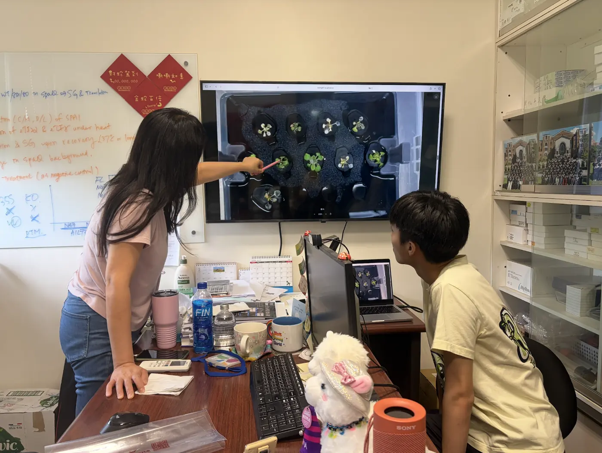
AgarPlant system
We began growing Arabidopsis thaliana on agar to create a more controlled platform for testing plant responses to stress.
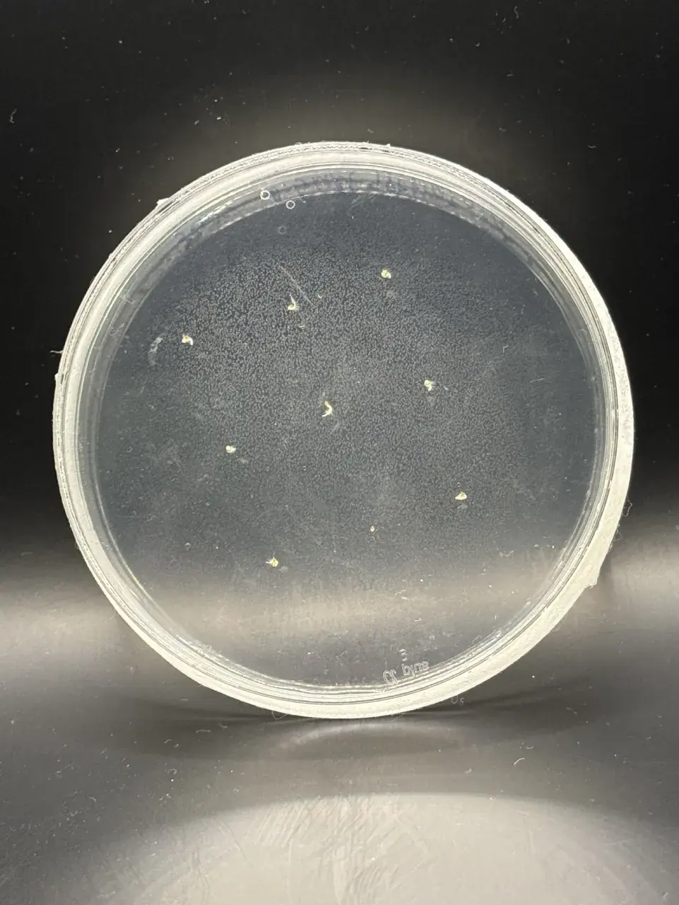
Our first experiments focused on establishing a workable growing protocol. We started with two days of stratification and transferred four-day-old seedlings onto stress plates. However, inconsistent germination and frequent contamination made it difficult to obtain reliable results.

Contamination became one of our first major obstacles. We learned that seed sterilization and careful transfers were critical, and began moving transfers into the biosafety cabinet under supervision.

Once we could consistently grow the plants, we began testing whether trehalose could protect Arabidopsis from salt stress. Our early experiments showed that the outcome depended heavily on both the salt and protectant concentration. At some concentrations, trehalose itself inhibited plant growth, while at others, we could not observe a clear protective effect.
We also realized that simply counting how many seedlings were growing was not sensitive enough. We switched to vertical agar plates so that root growth could be traced and measured, giving us a quantitative readout instead of relying on visual differences.
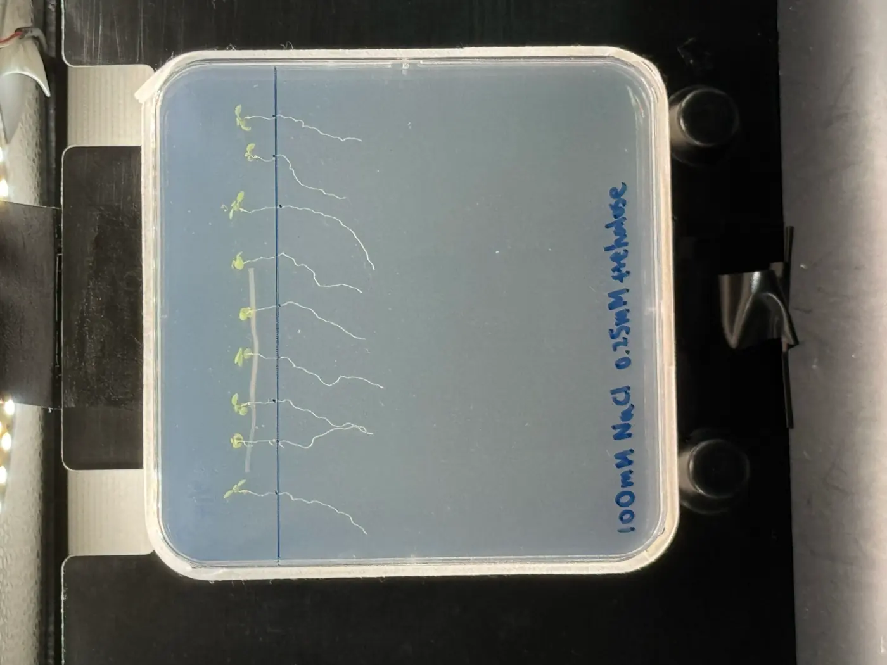
We then tested stronger salt concentrations to find a stress level severe enough to produce a measurable response without killing the plants completely. At 250 mM NaCl, the seedlings bleached within a few days, showing us that excessive stress left no room for a protectant to demonstrate an effect.
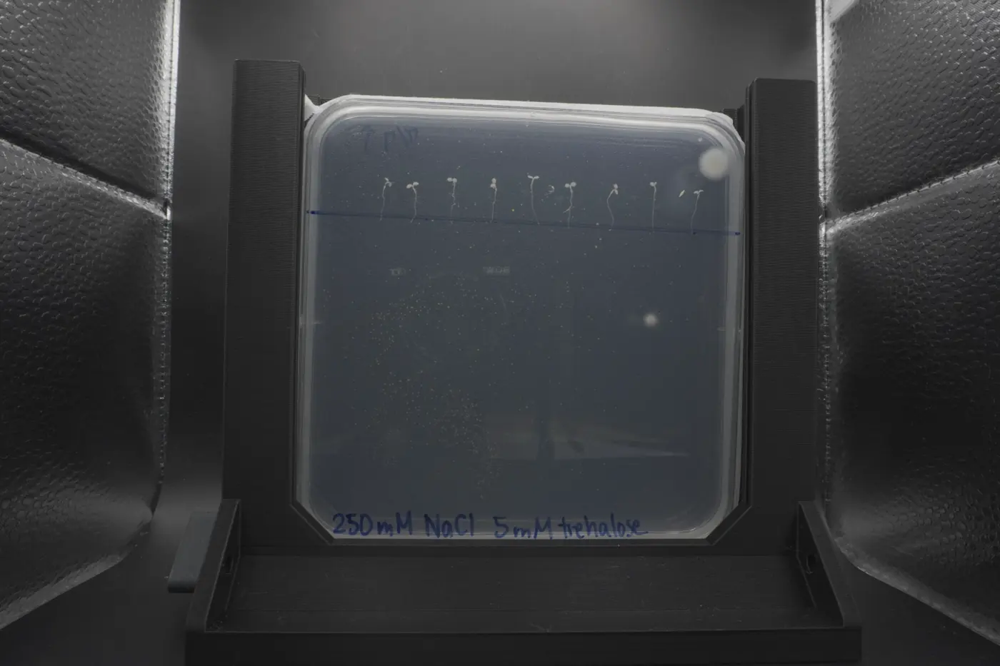
We therefore ran a wider salt ladder at 75, 100, and 150 mM. This experiment gave us a usable stress window: 75–100 mM injured the plants while keeping them alive, whereas 150 mM left very little growth to rescue. We could now use this range for future protectant testing.

As we moved from testing the stress conditions to testing protectants, we encountered another problem: how to actually deliver the protectant to the plant. Pipetting liquid onto the plates could float seedlings off the agar, while spraying left droplets on the leaves. We eventually moved toward transferring seedlings onto fresh plates containing the treatment, allowing the dose to be controlled by the medium rather than by how much liquid remained on the plant.

With this platform, we began testing CH Bio peptide at three different timings: before, during, and after salt stress. This was important for ReLeaf because the timing of protection would eventually determine when our bioreactor should begin producing a protectant.
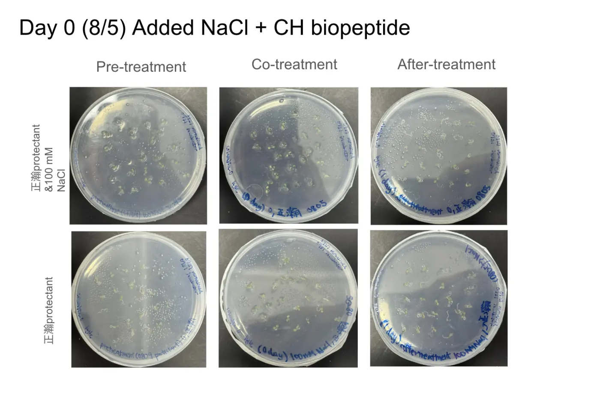
We then moved toward testing one of our own intended protectants, ACC deaminase. However, both Set 8 trials were invalidated by bacterial contamination, and a Western blot also found no detectable ACC deaminase in the engineered B. subtilis. We therefore could not use these experiments as evidence that ACC deaminase protected the plants.

Through these iterations, the agar system became a controlled assay with defined stress conditions, treatment timing, delivery methods, and quantitative readouts. These were all necessary before we could confidently determine whether a ReLeaf protectant actually works.

SoilPlant system
Alongside our agar and hydroponics experiments, we began growing Arabidopsis in soil to test plant responses under conditions closer to how ReLeaf would eventually be used. Rather than treating soil as a replacement for our other systems, we used it as a separate platform to see whether observations from controlled environments would carry over to a more realistic growing condition.
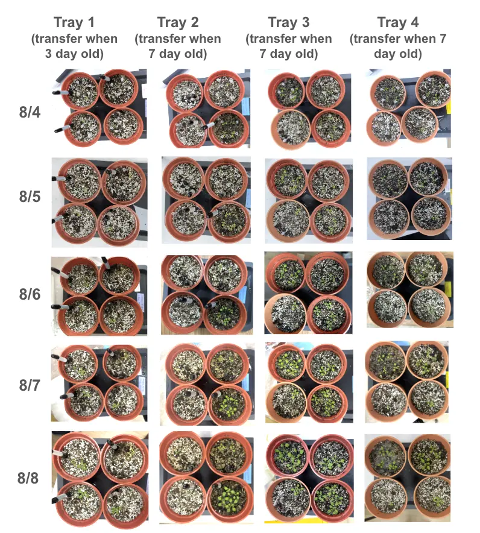
Our first soil experiments focused on establishing a consistent way to grow the plants. We standardized the pots, soil, and growing conditions while monitoring plant growth over time. This gave us a baseline for how healthy plants developed before introducing stress.
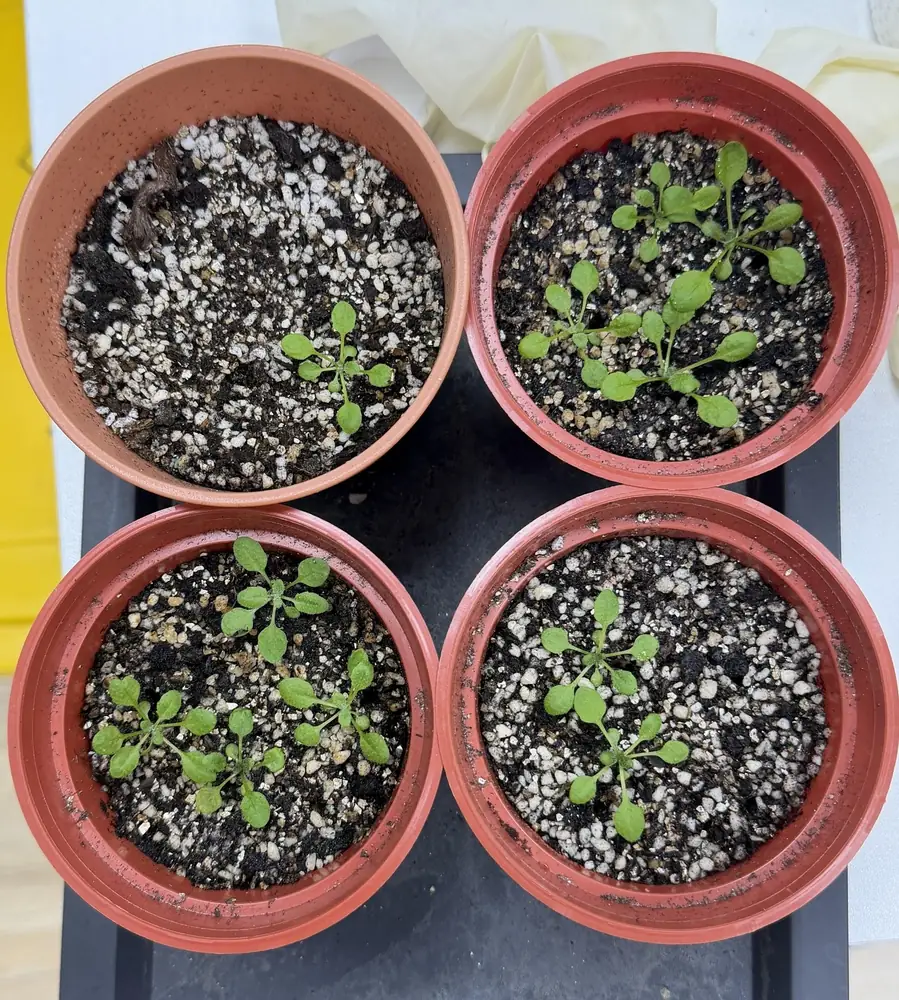
We then began introducing salt stress to soil-grown Arabidopsis. Unlike agar, where the salt concentration in the medium can be directly defined, soil made the relationship between the amount of salt added and the stress experienced by the plant less straightforward. This meant that we needed to treat the soil experiments as a separate stress model rather than directly transferring concentrations from our agar experiments.
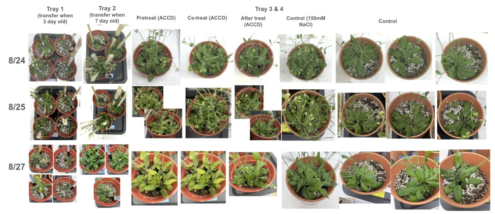
As we compared the plants over time, we began looking for visible and measurable differences between unstressed and stressed groups. This helped us consider which plant responses would remain useful outside of the highly controlled agar system.
The soil experiments also helped us move closer to the conditions ReLeaf is designed for. While agar allowed us to isolate individual variables and measure responses precisely, soil introduced the variability that would be present in an actual agricultural environment.
Together, our three plant systems allowed us to approach plant protection from different levels of control. Agar gave us a precise platform for stress-dose and treatment experiments, hydroponics allowed us to control the plant’s liquid environment, and soil brought our testing closer to the conditions in which ReLeaf would ultimately operate.
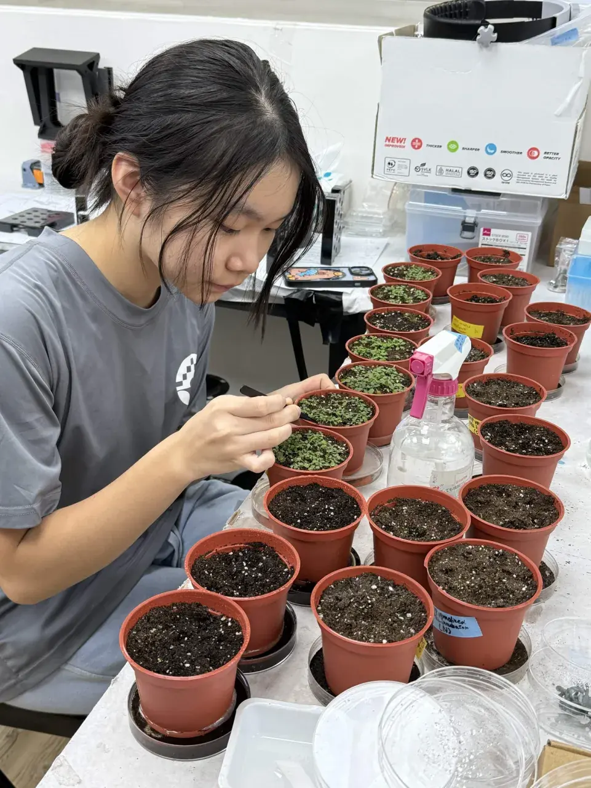
BioreactorBioreactor and hardware
Once we decided that ReLeaf would produce protectants onsite, we needed a way to continuously culture our engineered Bacillus subtilis while separating the bacteria from the protectants they produced. We chose a hollow-fiber membrane bioreactor as our starting point: the membrane would retain the bacteria while allowing smaller molecules to pass into a separate collection stream.

Our first prototype was built to test whether we could maintain bacterial culture while continuously perfusing medium through the hollow-fiber membrane. Rather than immediately optimizing every component, we first wanted to answer a more basic question: could the system maintain continuous flow and keep the culture contained?
The first cycle revealed several problems. A leak developed around the pump head, forcing us to stop the experiment early. We also observed differences between the OD600 measured in the tubing and in the reservoir, suggesting that the culture was not evenly mixed. These failures showed us that simply circulating the culture was not enough—the reactor also needed reliable connections and effective mixing.

We redesigned the system for the second cycle. We improved the tubing connections, introduced magnetic stirring to reduce sedimentation, and changed the sampling location to the reservoir outlet so that measurements would better represent the culture as a whole.

The second cycle ran without leaking and produced a complete growth curve, with the culture plateauing at OD600 0.8–0.9 after about two hours. Several components had changed between cycles, so we cannot say which change caused the improvement. Hardware iteration needs controlled testing too, not only a better-performing prototype.
We then focused on one of the most important functions of the bioreactor: keeping engineered bacteria contained. We collected medium from the shell side of the hollow fiber and plated it on LB agar. No colonies were observed in this initial test, providing preliminary evidence that the membrane was retaining the cells. However, a single test was not enough to establish reliable containment, so replicated testing remained necessary.

Another limitation was that monitoring the culture required sampling. To move toward a more automated system, we integrated an in-line OD600 photometer, allowing bacterial growth to be monitored directly in the closed loop without repeatedly opening the reactor.

As the design developed, we began adding the sensors and controls needed for longer-term operation. The current system incorporates automated pumping, mixing, and measurements of culture conditions such as pH and dissolved oxygen, moving the reactor from a simple proof-of-concept toward a more autonomous production system.

However, a functional bacterial culture was only one part of our goal. For the bioreactor to fulfill its role in ReLeaf, we still needed to demonstrate that the correct protectant is produced at a sufficient concentration, crosses the membrane, and can be collected without compromising bacterial containment or reactor operation.

This is where the bioreactor began to connect with the rest of ReLeaf. The reactor would receive activation signals from the genetic-circuit/LED system, produce protectants in response, and ultimately connect to the delivery hardware that transfers those protectants to the plant. The bioreactor therefore became the bridge between “produce” and “deliver” in our larger system.
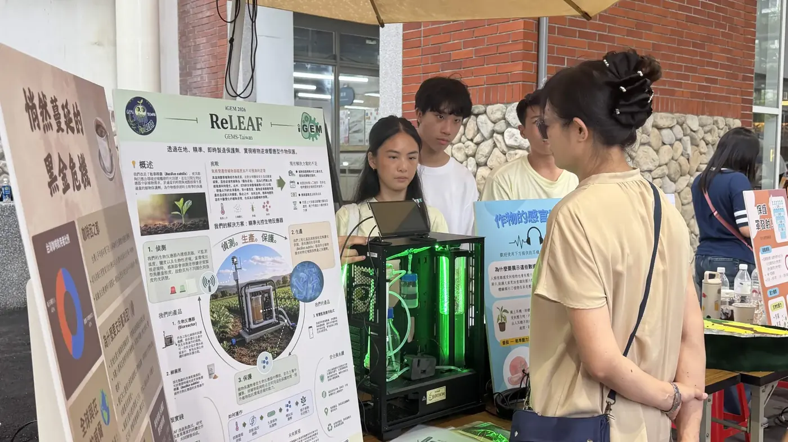
DiOPALBioreactor and hardware
Before we could use light to control protectant production, we needed to understand how our engineered Bacillus subtilis responded to different wavelengths and intensities. We started with a simple dual-LED setup based on the idea of using green light to turn protectant production on and red light to turn it off.
Our first prototype used a dual-LED-per-column layout controlled directly from a breadboard. This established the basic idea of switching between green and red light, but it was not yet suitable for quantitative comparison. Different LEDs could produce different outputs, and the cultures were still exposed to ambient light.

We therefore expanded the system into a 4 × 6 array, allowing us to test six light conditions with four replicates each. We introduced low, medium, and high intensity levels for both green and red light and measured the individual LEDs before selecting matched groups.

This measurement revealed another source of variation: nominally identical LEDs did not necessarily produce identical outputs. We therefore grouped LEDs with similar electrical characteristics so that the four LEDs in each experimental condition would produce more consistent illumination.

We also realized that controlling the LEDs alone was not enough. If ambient light reached the cultures, especially under low-intensity conditions, it could interfere with our comparison. We added an enclosure to shield the cultures from external light and make the applied light the controlled variable.
In our third iteration, DiOPAL became a self-contained instrument. We integrated the Arduino and electronics into an outer frame, added software-controlled intensity settings, and designed the tube holder and sliding components so that the system could be assembled and disassembled more easily.

The final design allows 24 cultures to be tested simultaneously under six defined conditions: green and red light at three intensity settings, with four replicates per condition. Rather than changing the light during an experiment, each condition receives a fixed light dose throughout the run.
However, building a more controlled instrument also revealed a new problem: we had to make sure that the numbers we were measuring actually represented the biological light dose. Our initial measurements were recorded in lux, but lux is weighted for human vision and therefore is not an appropriate measure of photon flux for comparing the 520 nm green and 660 nm red light used by our system.
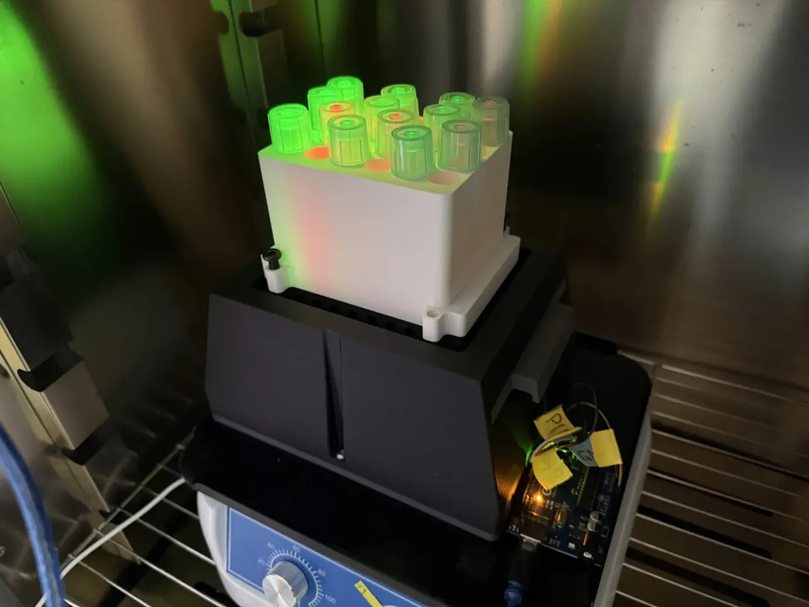
This changed our definition of what it means for DiOPAL to be functional. Having 24 LEDs turn on and produce different readings is not enough. We need to establish the actual photon flux at each condition, verify illumination uniformity between wells, and determine whether the selected conditions actually produce the expected changes in protectant expression.
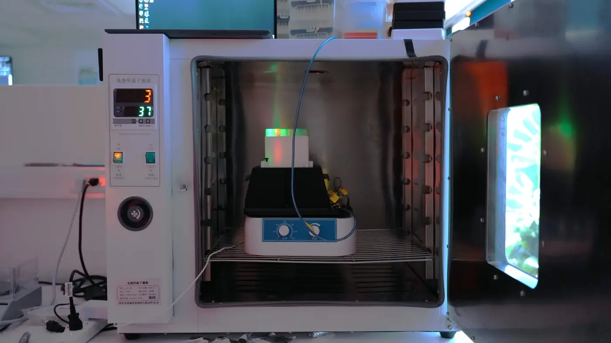
PhotometerBioreactor and hardware
As we developed the bioreactor, we realized that repeatedly removing samples to measure bacterial growth would interrupt the culture and make continuous monitoring difficult. We therefore designed an in-line photometer that could measure OD600 directly from the flowing culture without opening the system or withdrawing samples.
Our first prototype used a horizontal optical path with adjustable rails for the LED, lens, beamsplitter, and sensors. However, the readings fluctuated significantly. We traced this to two problems: bubbles were accumulating in the flow cuvette and passing through the light path, while the adjustable optical components could shift out of alignment.
We responded by rotating the optical path vertically and tightening the tolerances between components. This allowed bubbles to rise away from the optical path instead of remaining in the cuvette. We also added valves and syringes so that trapped air could be manually removed from the tubing.

The vertical design reduced the bubble problem, but we found that bubbles could still cling to the cuvette wall. We therefore tilted the entire optical channel by 10°, allowing bubbles to move toward the outlet instead of remaining in the measurement region.

This iteration brought the difference from the Bio-Drop reference down from roughly 20% to 8% in one paired measurement. However, the LED was still not perfectly aligned with the optical path, so we continued iterating.
In our fourth iteration, we moved from an adjustable prototype toward a reproducible instrument. We locked the optical components into fixed positions, added TPU lining to prevent movement, enclosed the light path to block ambient light, and reinforced the angled stand so that tubing would not change its position.

We also developed a ratiometric measurement system. Instead of relying only on the light passing through the culture, a beamsplitter sends part of the light directly to a reference sensor while the remaining light passes through the culture. Comparing these two signals allows changes in LED intensity to be accounted for, making the measurement less dependent on fluctuations in the light source.
With the physical system established, we integrated the photometer with a live dashboard. The system records the sample and reference signals, calculates their ratio, reports OD600, and continuously logs measurements. We also developed a bubble-rejection system so that brief disturbances caused by bubbles would not automatically become biological data.

We then tested whether the photometer could operate continuously rather than simply produce individual measurements. Over 336 hours, the instrument logged 2,132 measurements without withdrawing a single sample. During the run, the photometer even captured a sudden change caused by a recirculation-pump failure, demonstrating that continuous monitoring could reveal problems that would otherwise occur between manual measurements.

Collecting continuous data is not the same as proving it accurate. The final build has not passed independent accuracy validation: one comparison with the Bio-Drop came in 33% low, and calibration repeats and a dilution series are still owed. Fouling, temperature effects and linearity at higher cell densities are all still open.

This changed our definition of success. The goal was no longer simply to build a sensor that could produce an OD value, but to create a reproducible, continuously operating measurement system whose readings can be trusted.

The photometer then became part of the bioreactor itself. Nobody has to open the reactor to ask how much the bacteria have grown: the loop watches its own state continuously, while production carries on.
ACCD productionGenetic circuit and production
Our goal was to make Bacillus subtilis produce ACC deaminase (ACCD) in response to a controllable signal. This would allow ReLeaf to connect stress detection with on-demand protectant production, rather than producing ACCD continuously.
We designed the circuit around a light-responsive system, with the signal ultimately controlling expression of the ACCD gene. This gave us the basic logic of ReLeaf’s production stage: light signal → genetic circuit → ACCD production.

Our first attempts focused on getting the genetic components into B. subtilis and establishing a strain that could carry the production system. At this stage, however, having the correct DNA construct did not yet mean that the bacteria were producing detectable ACCD.

We therefore began separating the problem into smaller questions. First, we needed to determine whether the genetic circuit responded to its input signal. Then, we needed to determine whether that response actually resulted in ACCD expression.
Early characterization revealed that circuit activation and protein production could not simply be assumed from one another. A visible response to the input signal would only demonstrate that the circuit was responding; we still needed direct evidence that ACCD was being produced.
We then attempted to verify ACCD production directly. However, our later plant experiment revealed an important problem: the engineered B. subtilis did not show detectable ACCD in the Western blot. Without detectable ACCD, we could not conclude that the bacteria had successfully produced the protectant at a level that could explain a plant response.

This became especially important when we tested the engineered bacteria with Arabidopsis. The experiment was also affected by bacterial contamination, meaning that we could not use the plant results to claim that ACCD protected the plants. We were left with two separate questions that still needed to be answered: did the circuit activate correctly, and did that activation produce enough functional ACCD?
This changed how we defined success for the production system. A successful genetic circuit could not simply mean that the DNA was present or that the cells received a light signal. We needed evidence at every stage: signal response → ACCD expression → ACCD activity → sufficient production → measurable plant protection.
This also connected the genetic circuit to our hardware. DiOPAL provides the controlled light input, while the bioreactor provides the environment for bacterial growth and production. Together, they form the production stage of ReLeaf: DiOPAL controls the signal, the genetic circuit interprets it, and the bioreactor provides the platform for producing ACCD.
Expert engagementOutreach
We started with the question “What should we test?” At first, the project was broad, with multiple stresses, Medicago, hydroponics, and several possible ways of testing plant responses. Dr. Lin pushed us to consider real plant applicability and rethink the target plant, while Prof. Cheng gave us a more controllable experimental path with Arabidopsis and early-stage agar growth.
IterationMedicago + hydroponics + many stresses→Arabidopsis + controlled growth + focused stresses

Next, we asked “What should the bacteria actually do?” Our original concept leaned toward delivering protective compounds such as proline/trehalose. Dr. Verslues challenged that approach by emphasizing the plant’s natural stress-response mechanisms and the importance of detecting stress early rather than simply trying to recover from it.
IterationSupply protection after stress→Use bacterial products/signals to influence plant stress responses earlier
“Where should production happen?” Prof. Chen introduced the idea of treating the hardware as a “printer” and the biofertilizer as the “ink,” pushing us toward clear input-output relationships and a controlled bioreactor rather than releasing engineered bacteria into soil. Dr. Brophy strengthened that design from a biosafety perspective: physical containment should be the primary safety mechanism rather than depending on a kill switch. This led directly toward our membrane-based containment strategy.
IterationEngineered bacteria interacting directly with the environment→Contained production system + protectant delivery
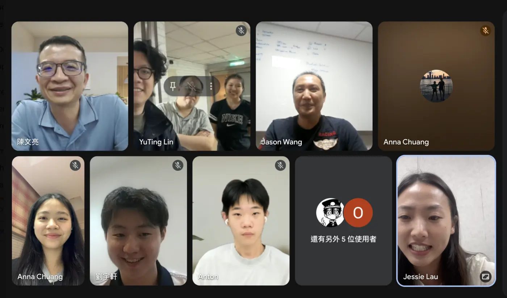

“Does the protectant itself actually work?” By June, we were already thinking about integrating protectant production into the bioreactor. Dr. Sattely made us step backward: validate the protectant before integrating it into the entire system. She also encouraged us to focus on fewer stresses and establish clearer goals and measurable outcomes.
IterationBuild the complete system first→Validate the biological output before integration
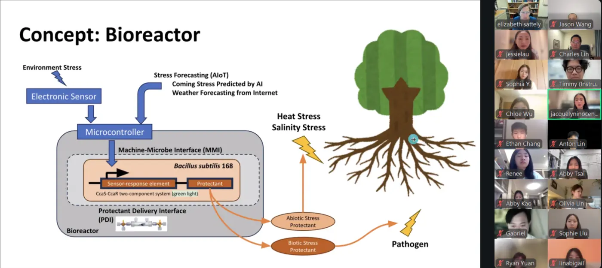
“How do we know the system actually works together?” Later consultations increasingly focused on dosage, timing, delivery, modeling, and validation, rather than just individual components. Prof. Chen emphasized connecting experimental data and modeling through feedback loops. CH Biotech pushed us to demonstrate actual plant performance under stress and consider different delivery methods and practical constraints. Prof. Huang then highlighted that effectiveness depends on how much protectant reaches the plant, when it arrives, and how often it is applied.
IterationCan each component work?→Can the components produce the right output, at the right amount, at the right time, in the right place?
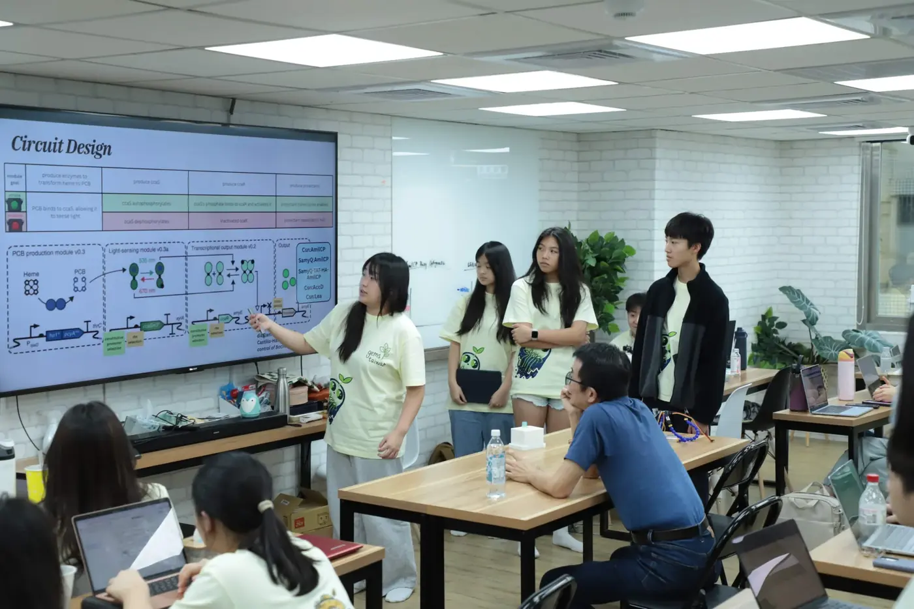
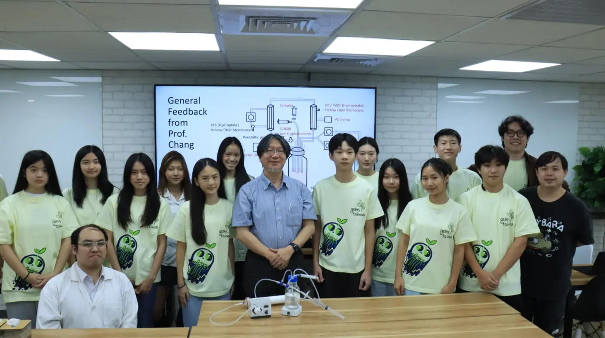

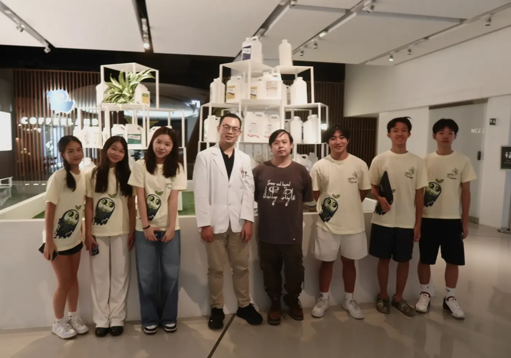
“How do we prove what we are claiming?” Our latest consultations become much more about experimental rigor and interpretation. Prof. Huang pointed out that protein quantity alone isn’t enough; we need to consider identity, solubility, and function together. Prof. Cheng helped us recognize that experimental conditions themselves can create stress and therefore need to be standardized. Our September meeting with Dr. Sattely and Prof. Endy brought everything together: distinguish the engineered bacteria from the protectant, demonstrate actual ACCD production/secretion, strengthen controls, and make clear what each experiment proves.
IterationCollect results→Build evidence that clearly demonstrates what each result means
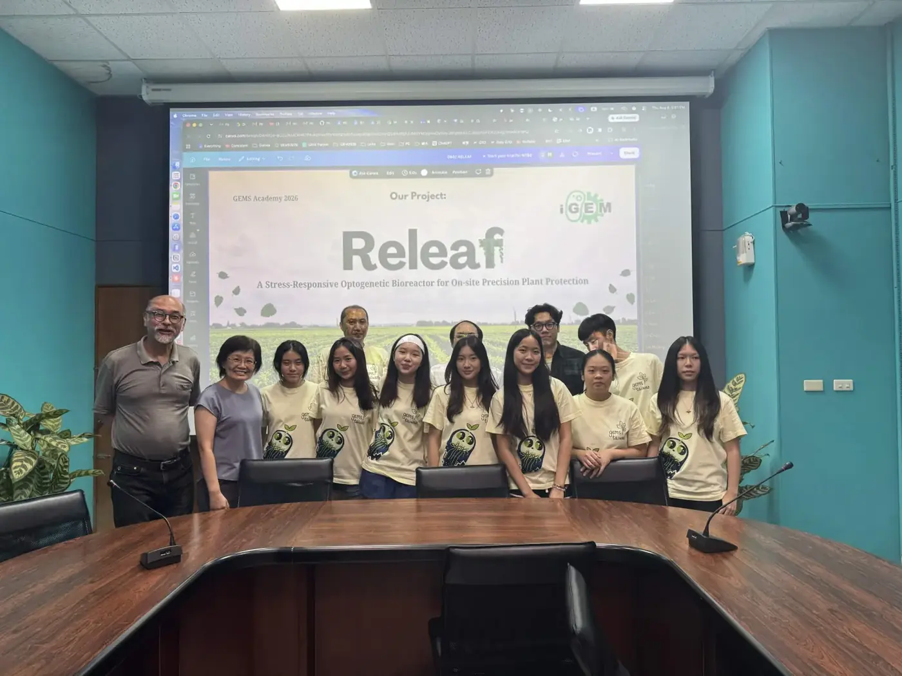
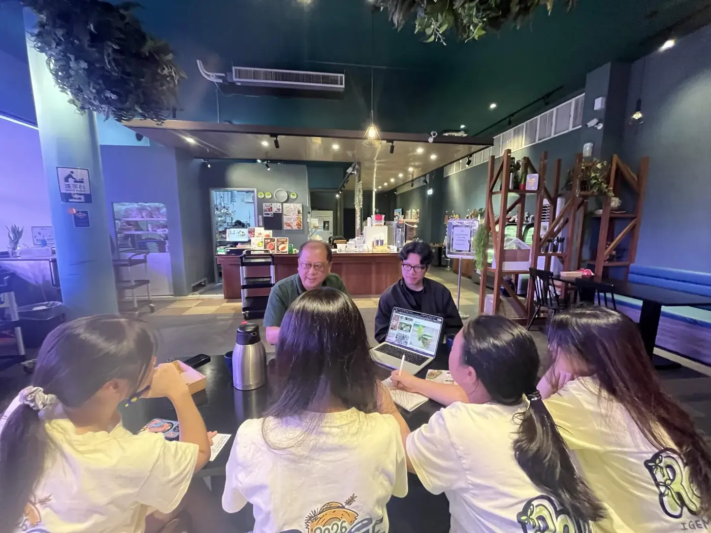

ReLeaf validation
After multiple rounds of testing and iteration across several systems, we returned to the question at the beginning: Does ReLeaf work as a complete system?
The final ReLeaf system
The final system brings the project’s components together, and the test is no longer whether each works alone. It is whether they form one working chain: detect the plant stress, activate production, make and contain the protectant, deliver it, and reduce the stress.

Criteria validation
Near the end of our project, we compared our quantified results with the success criteria table we previously established.
- Successful
- Partial success
- Pending
- Not started
| Functional requirement | Acceptance criteria | Current status |
|---|---|---|
| Sensors can identify target environmental stresses | Sensor correctly identifies the presence/absence of the target stress with ≥90% accuracy across predefined test conditions. | Not started |
| Detect stress consistently, produce repeatable readings under the same conditions | Repeated measurements under identical conditions have CV ≤10%. | Not started |
| Detect stress within a useful timeframe | Stress detection occurs within a timeframe that still allows the downstream system to respond before the intended treatment window closes. Target: ≤60 sec. | Not started |
| Distinguish stress severity, sensor output changes appropriately with increasing stress | Sensor signal shows a monotonic and reproducible relationship with at least 3 predefined stress levels. | Not started |
| Functional requirement | Acceptance criteria | Current status |
|---|---|---|
| Convert stress information into the correct activation signal | The system activates under predefined stress conditions and remains inactive under predefined non-stress conditions. ≥90% correct activation decisions across test conditions. | Not started |
| Activate within an appropriate timeframe | Detection-to-activation delay is ≤3 min. | Not started |
| Produce the intended light signal, with required wavelength and intensity | Wavelength range of green light is 525 nm ±30 nm. Wavelength of red light is 660 nm ±30 nm. | Not started |
| Maintain activation reliably, light signal remains within required range during operation | Light intensity does not vary by over 10%. | Not started |
| Functional requirement | Acceptance criteria | Current status |
|---|---|---|
| Engineered bacteria respond to the light signal | Band size of LPA testing samples matches the according protectant. Statistically significant increase in protectant concentration under the activating condition | Pending |
| Produce the intended protectant | Detectable target protein above the assay’s validated detection limit | Successful |
| Produce the right amount of protectant | Production reaches the minimum concentration required at the plant, after accounting for downstream transfer/dilution. | Pending |
| Production is controllable, changes appropriately with activation conditions | Activating condition produces significantly greater production than non-activating controls | Pending |
| Production remains stable, output does not substantially decline during intended operating period | Production remains within ≥80% of initial output over the intended operating period. | Pending |
| Functional requirement | Acceptance criteria | Current status |
|---|---|---|
| Retain engineered bacteria inside the bioreactor | No detectable viable engineered cells in the output stream above the assay’s validated detection limit. | Successful |
| Maintain membrane integrity | No evidence of membrane failure, abnormal leakage, or loss of containment during the intended operating period. | Successful |
| Maintain containment over time, no leakage | Containment criterion is satisfied throughout the entire intended run. | Successful |
| Prevent contamination of the output stream | A membrane/flow/pressure abnormality or downstream biological signal can be detected before continued operation creates a larger problem. | Successful |
| Functional requirement | Acceptance criteria | Current status |
|---|---|---|
| Protectant crosses the membrane | Target protectant is detectable and quantifiable on the output side of the membrane. | Partial success |
| Deliver sufficient protectant | Output concentration reaches the minimum plant-effective concentration established from plant experiments/literature. | Pending |
| Maintain delivery during operation, transfer does not deteriorate substantially during a run | Delivery concentration remains within ±20% of the intended operating range during steady-state operation. | Pending |
| Deliver at an appropriate rate, protectant reaches plant quickly enough relative to stress progression | A measurable and reproducible fraction of produced protectant reaches the output stream. Target: ≥50% transfer efficiency. | Pending |
| Functional requirement | Acceptance criteria | Current status |
|---|---|---|
| Protectant reaches the plant at an effective dose, produces a measurable biological effect | Treated stressed plants show a statistically significant improvement in at least one predefined primary plant-health metric compared with stressed untreated controls. | Pending |
| Improve plant performance | Treatment produces at least a 20% improvement relative to the stressed control in the primary metric, unless literature or baseline variability supports another threshold. | Pending |
| Timing is appropriate, affects protection in a useful/appropriate way | At least one treatment dose/timing condition produces a reproducible protective effect, and the relationship between dose/timing and response is characterized sufficiently to identify an effective operating range. | Pending |
| Effect is reproducible | The protective effect is observed across independent biological replicates/experiments. | Successful |
What counts as success?
Our success criteria provide a concrete definition of what it means for ReLeaf to function. When the evidence demonstrates that each critical stage performs its intended function and connects to the next stage, we consider the ReLeaf system successfully validated against its current design goals.
None of that makes ReLeaf finished. A working system can still be made more efficient, more reliable, more scalable and more accessible. What validation establishes is narrower: the pathway we designed, Detect → Activate → Produce → Contain → Deliver → Protect, can run as intended.
In this way, our failures were not endpoints, but measurements that guided the system toward function. The final ReLeaf system represents not the end of development, but a validated foundation for further improvement.